| Menu Ferramentas |
|
Essa ferramenta
é usada para
gerenciar os parâmetros, matrizes e curvas de calibração de sensores
usados no
processamento de dados de voo. Ela permite o cadastramento de várias
aeronaves
calibrações, que são ordenadas por data.
Clique em
“Ferramentas ► Processamento de dados
... ►
Editor de dados de calibração”.
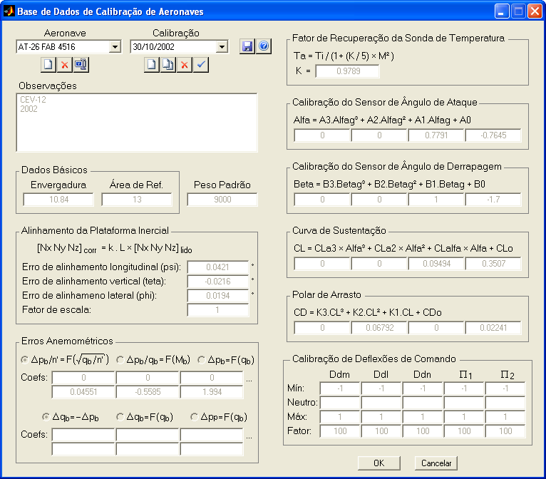
|
Nota: A ferramenta
requer resolução mínima de 1024 × 768
pixels e não executará em resoluções menores. |
Descrição
e Operação
A base de dados
de calibração de aeronaves é organizada por
aeronave e por data de calibração.
As aeronaves
cadastradas são apresentadas na lista “Aeronave”
e as datas de calibração de cada aeronave na lista “Calibração”.
Todos os campos
de dados são atualizados de acordo com o par
aeronave/calibração selecionado.
Abaixo de cada
lista há uma barra de ferramentas com botões
que permitem controlar a base de dados.
Controle
de Aeronaves
Para acrescentar uma
nova aeronave à base de dados, clique no botão  da
lista de aeronaves.
Informe o tipo da
aeronave e sua matrícula e clique “OK”.
da
lista de aeronaves.
Informe o tipo da
aeronave e sua matrícula e clique “OK”.
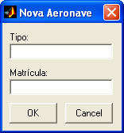
Na sequência
será criada uma calibração para a nova aeronave
(ver item “controle de calibrações”).
Para remover a
aeronave selecionada e todas as suas calibrações, clique no
botão da
lista de aeronaves e
confirme. Deve haver
pelo menos uma aeronave na base de dados.
Para editar o tipo e
matrícula da aeronave selecionada, clique no botão  da
lista de aeronaves, faça
as modificações e
clique “OK”.
da
lista de aeronaves, faça
as modificações e
clique “OK”.
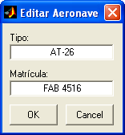
Controle
de Calibrações
Para acrescentar uma
nova calibração para a aeronave selecionada, clique no
botão  da
lista de calibrações,
confirme a intenção,
informe a data no formato dd/mm/aaaa
e clique “OK”.
da
lista de calibrações,
confirme a intenção,
informe a data no formato dd/mm/aaaa
e clique “OK”.
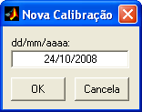
O modo de
edição de dados de calibração será habilitado
automaticamente após a criação da nova calibração.
Para duplicar a
calibração selecionada, clique no botão da
lista de calibrações,
confirme a intenção,
informe a data no formato dd/mm/aaaa
e clique “OK”.
Será criada uma
nova calibração com os dados da calibração
duplicada. O modo de edição de dados de calibração será habilitado
automaticamente após a duplicação da calibração.
Para remover a
calibração selecionada, clique no botão da
lista de calibrações e
confirme. Deve haver
pelo menos uma calibração por aeronave na base de dados.
Para habilitar o modo
de edição de dados de calibração, selecione a aeronave e a
calibração
desejada, clique no botão da
lista de calibrações e
confirme a intenção.
Enquanto o modo
de edição estiver habilitado, o botão ficará
pressionado os campos de dados ficarão disponíveis para edição.
Para desabilitar o
modo de edição de dados de calibração, clique novamente no
botão e
confirme ou descarte as
alterações
realizadas.
Dados
de
Calibração
A base de dados
de calibração permite armazenar os seguintes
parâmetros para processamento de dados de sensores:
Observações
Texto livre com
observações referentes a cada calibração.
Dados
Básicos
Medidas de
envergadura e área de referência de cada aeronave
(valor único para todas as calibrações). Atualmente esses parâmetros
não são
utilizados para processamento de dados (reservados para uso futuro).
Peso Padrão
Peso padrão
(Ws) usado para obtenção do fator de carga
reduzido n’ = Nz.W / Ws necessário para a
implementação da curva de correção
dos erros anemométricos do tipo 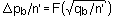
Alinhamento da
Plataforma Inercial
Caso a
plataforma inercial da instrumentação (acelerômetros,
girômetros e giro
vertical) não esteja perfeitamente
alinhada com os eixos de referência da aeronave, é necessário aplicar
uma
correção nos parâmetros medidos. A correção é feita a partir dos ângulos
de Euler
da plataforma com relação ao sistema do corpo da aeronave ( 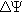 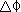
Caso haja um
erro de escala nos acelerômetros, é possível
inserir um fator de correção (k).
Os ângulos de
correção e o fator de escala (k) são
fornecidos na calibração dos sensores.
Para realizar
apenas a correção de alinhamento, mantenha k =
1 e para realizar apenas correção de escala, mantenha , e =
0.
Erros
Anemométricos
Para a correção
dos erros anemométricos das sondas de
pressão estática e dinâmica é necessário informar os tipos de curvas de
correção e os coeficientes das curvas ajustadas.
Para a correção
da sonda de pressão estática (erro de
posição), as opções de tipo de curva são:
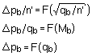
Para a correção
da sonda de pressão dinâmica (erro de
velocidade), as opções de tipo de curva são:
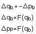
As curvas
ajustadas são do tipo polinomial de até 5º grau,
com coeficientes em ordem decrescente de significância. Mantenha os
primeiros
coeficientes em zero para reduzir a ordem do polinômio.
Os tipos de
curva são escolhidos por critérios de engenharia
e os coeficientes são obtidos em ensaios em voo de calibração
anemométrica.
A unidade de
saída de Δqb e Δpb
deve ser milibar (ou hPa).
Para maiores
informações, ver apostila E-B11 – “Introdução à
Aerodinâmica” da Divisão de Formação em Ensaios em Voo do IPEV.
Fator de
Recuperação
da Sonda de Temperatura
O fator de
recuperação da sonda de temperatura (K) é usado
para a obtenção da temperatura do ar (Ta) a partir da temperatura de
impacto
(Ti) lida pela sonda de temperatura e do número de Mach verdadeiro (M).
O fator é
obtido em ensaios em voo de calibração
anemométrica.
Para maiores
informações, ver apostila E-B11 – “Introdução à
Aerodinâmica” da Divisão de Formação em Ensaios em Voo do IPEV.
Calibração do
Sensor
de Ângulo de Ataque
O ângulo de
ataque verdadeiro (α) é obtido a
partir do ângulo de
ataque lido pela sonda (αg) através de
uma curva de calibração
polinomial de até 3º grau, na forma:
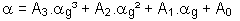
Os coeficientes
A3, A2, A1
e A0 são obtidos em ensaios em voo de calibração
anemométrica ou
cruzeiro.
Para maiores
informações, ver apostila E-B11 – “Introdução à
Aerodinâmica” da Divisão de Formação em Ensaios em Voo do IPEV.
Calibração do
Sensor
de Ângulo de Derrapagem
O ângulo de
derrapagem verdadeiro (β)
é
obtido a partir do ângulo de derrapagem lido pela sonda (βg) através de
uma curva de calibração polinomial de até 3º
grau, na forma:
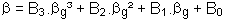
Os coeficientes
B3, B2, B1
e B0 são obtidos em ensaios em voo de calibração
anemométrica ou
cruzeiro.
Para maiores
informações, ver apostila E-B11 – “Introdução à
Aerodinâmica” da Divisão de Formação em Ensaios em Voo do IPEV.
Curva de
Sustentação
O coeficiente
de sustentação (CL) é obtido como
função do ângulo de ataque verdadeiro (α) através de
uma curva polinomial de
até 3º grau, na forma:
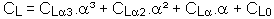
Os coeficientes
CL3,
CL2,
CL
e CL0 são obtidos em ensaios em voo de cruzeiro.
Para maiores
informações, ver apostila E-B11 – “Introdução à
Aerodinâmica” da Divisão de Formação em Ensaios em Voo do IPEV.
Polar de Arrasto
O coeficiente
de arrasto (CD) é obtido como
função do coeficiente de sustentação (CL) através de
uma curva polinomial de
até 3º grau, na forma:
CD = K3.CL³
+ K2.CL²
+ K1.CL + CD0
Os coeficientes
K3, K2, K1
e CD0 são obtidos em ensaios em voo de cruzeiro.
Para polar
parabólica simétrica, use K3 = K1
= 0.
Para maiores
informações, ver apostila E-B11 – “Introdução à
Aerodinâmica” da Divisão de Formação em Ensaios em Voo do IPEV.
Calibração de
Deflexões de Comando
As deflexões de
comando (manche, pedais e manetes) lidas pela instrumentação geralmente
são normalizadas entre -1 e 1,
-100 e 100% ou
convertidas em alguma unidade de engenharia.
Para a
calibração das deflexões de comando devem ser
indicados, para cada eixo, os valores de deflexão lidos correspondentes
aos batentes mínimo e máximo do
curso, que serão convertidos,
respectivamente, nos valores -1 e 1. O valor de deflexão
neutra é
opcional e, caso seja inserido, será convertido no valor zero.
Todos os
valores de deflexão serão interpolados ou
extrapolados linearmente em função desses pontos de controle, sendo
depois
multiplicados pelo fator de conversão de cada eixo.
Para
transformar as deflexões normalizadas em porcentagem,
use fator de conversão 100 e para unidade de engenharia use o valor
equivalente
à deflexão máxima de cada eixo.
Os valores de
deflexão correspondentes aos batentes dos
cursos são obtidos no solo durante o cheque de comandos.
Salvar e
Sair
Após cadastrar
as aeronaves e as respectivas calibrações,
use o botão  para
salvar a base de dados.
para
salvar a base de dados.
Use o botão
“OK” para salvar a base de dados e sair, ou o
botão “Cancela” para descartar as alterações e sair.
Use a ferramenta
de
processamento de dados no menu
“Ferramentas” para
realizar o processamento de dados com os parâmetros cadastrados.
| |
Processamento
de dados |
Processar
dados |
|